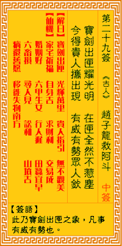

观音灵签第二十九签 【赵子龙救阿斗】 |
 | |||
宝剑光芒出匣时 匣中应不被尘欺 贵人亲手提携起 尽可防身更勿疑 |
||||
| 【吉凶】 | 大吉签 | 【宫位】 | 午宫 | |
| 【签语】 | 此卦宝剑出匣之象，凡事有威有势也。 | |||
| 【解曰】 | 宝剑出匣 光辉万里 贵人指引 无不欢美 | |||
| 【仙机】 | 此签家宅祈福，自身吉，求财利，交易成，婚姻好，六甲生女，行人滞，田蚕宜早，六畜损，寻人见，讼和，移徙兴，失物南方，病还旧 愿，山坟吉。 | |||
| 【详解】 | 宝剑在出鞘时射出光芒，本身的锋芒当还在剑鞘中时也不会被尘垢所影响;当贵人将此剑为你取出，大可安心用来防身不用怀疑。 宝剑出匣，光辉万里，贵人指出，无不赞美。此签宝剑出匣之象，凡事高人指出。 本签示之曰。是宝剑出匣之象。凡事有高人指出时。必有成者。尽可防身更无疑者。时运已济。安闲守分。至卯年月。大有发展。锋芒毕露者。士子科第。仕官之人。得擢升。另言之。宝剑出匣光辉万里贵人指出。无不赞美者也。 此签有”寻求他志”之意。鼓励当事人，专精技能。百里奚在成为”宰相”一职之前，之所以能够维生，是因为他除了学识渊博之外，还有另一项技能：饲养牲畜。因此除了本身的工作之外，不妨寻求、培养自己的第二专长。先从自己有兴趣的方面着手，不仅让生活加添乐趣，也由于是自己的喜好，更能乐在其中。或听取亲朋好友的意见，参与其它的活动。不论本身是否在行，但只要努力尝试、尽力去做，相信日久也会熟能生巧，变成自己的第二项、甚至更多项技能，不但更有保障，生活也有了更多重心。 | |||
| 【典故】 | 赵云，字子龙，常山人，为刘备的猛将。时曹操欲下江南，先攻先主刘备于莘野，先主走樊城，复败于当阳，家眷失散。子龙于土墙下遇縻夫人，夫人将子阿斗托云，云将马授夫人，夫人不肯授，投井而死，云哭埋毕，怀抱阿斗，杀死曹军十多员大将，冲出重围，遇张飞在长板坡接应，救出了阿斗。 | |||